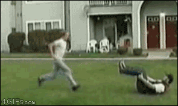

The greatest feeling is knowing you got up before the sun. It's hard, but it's like the most important key to success. It helps to prepare clothes and just actions in general
The magical potion of healing is a great way to start the day. I just need something to fill the gap between making the brew. It's not like it tastes any good. It just makes you feel good, happy, successful.
I like to watch videos to learn. And when I watch educational videos, it's very rewarding. You can literally learn anything, but I make sure I stick to the important videos first like coding. Also have to beware of the possibility to get caught up in some titties.
Getting passed the Tea process without eating is key man. Eating makes me unable to stretch. If I can't stretch, I feel very unfulfilled. And that's no way to start the day. We usually stretch as the sun rises